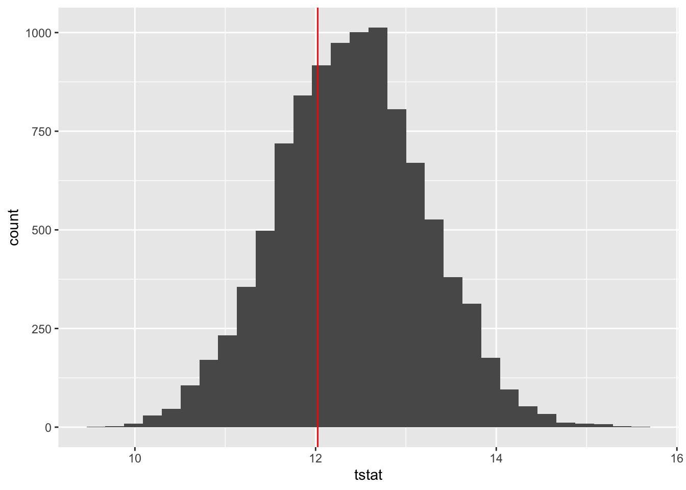
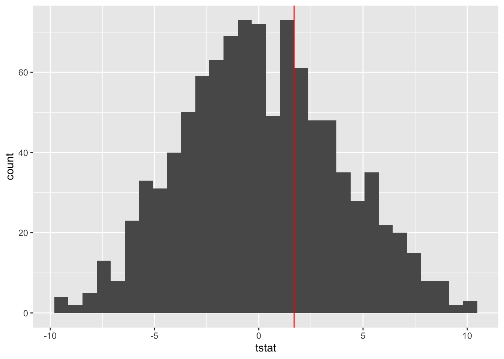

1.1 Computational inference
The problems we have discussed so far have been very simple once where theory can be worked out analytically to provide simple formulate and procedures. With more complex data structures, that can become much more difficult so this section will discuss some ways of approaching inference by computational means. The underlying principles are essentially the same but the method of implementation is different.
1.1.1 Simulation methods
There are some circumstances where the model whose suitability we wish to assess is completely known, without any dependence on unknown parameters. A simple example arises from spatial point patterns where we may wish to assess the evidence that the point pattern is generated by a process which is not simply uniform. The plot below shows data on large (breast height diameter >= 50cm) longleaf pine trees in a 200m x 200m sqaure of forest.
library(spatstat)
x <- longleaf$x[longleaf$marks >=50]
y <- longleaf$y[longleaf$marks >=50]
library(ggplot2)
ggplot(mapping = aes(x, y)) + geom_point()
We can generate our own trees patterns in a uniform random manner simply by locating each tree at an x and y position each of which is generated uniformly in the range (0, 200). here are some examples of patterns generated in this way.
n <- length(x)
for (i in 1:3) {
plt <- ggplot(mapping = aes(runif(n, 0, 200), runif(n, 0, 200))) +
geom_point()
print(plt)
}

How should we compare the observed pattern with the randomly generated ones? A simple way of doing this is to measure for each tree the distance to its nearest neighbour. If the pattern exhibits clustering, then these distances should be small, while if the pattern is uniform they will tend to be larger. We might then use as our test statistic the average of the distances to each nearest neighbour. We can generate the distribution of this average distance in the case where the locations are uniformly distributed simply by repeatedly simulating locations and retaining the average nearest neighbour distance for each one. The nndist function from the spatstat package can help us with the nearest neighbour distances.
nsim <- 10000
tstat <- rep(0, nsim)
for (i in 1:nsim) {
pp <- cbind(runif(n, 0, 200), runif(n, 0, 200))
tstat[i] <- mean(nndist(pp[ , 1], pp[ , 2]))
}
tstat.obs <- mean(nndist(x, y))
ggplot(mapping = aes(tstat)) + geom_histogram() +
geom_vline(xintercept = tstat.obs, col = "red")
length(tstat[tstat < tstat.obs]) / nsim## [1] 0.328
The histogram shows the distribution (subject to the variation present through simulation) of the average nearest neighbour distance when of atoms really are uniform. The red line shows the average neighbour distance for the observed data. Informally, but clearly, we can see that from this perspective the observed data is entirely consistent with the assumption of uniformity. An empirical p-value can be computed simply from the proportion of simulated values which fall below the observed one (as we look for evidence against uniformity in small nearest neighbour distances).
1.1.2 Randomisation tests
Randomisation is very important principle in designing experiments as it helps to overcome issues of bias. We will consider this in detail elsewhere. Randomisation can also be used as the basis for analysis when we are reluctant to make the normality and independence assumptions which underlie standard methods. The dataset below provides a very simple example of this it refers to an experiment to assess the possibly different effects of two fertilisers applied to tomato plants growing in a row. (This example comes from the book Statistics for Experimenters by Box, Hunter and Hunter.)
Row position 1 2 3 4 5 6 7 8 9 10 11
Fertiliser A A B B A B B B A A B
Yield (pounds) 29.9 11.4 26.6 23.7 25.3 28.5 14.2 17.9 16.5 21.1 24.3If the positions the fertilisers in the row have been randomised, and if the two fertilisers A and B are in fact equivalent in the effects, then the labels attached to the observations are immaterial. There is no connection between the labels and the outcomes. This allows us to calculate the distribution of the difference between the mean yields of A and B which is generated by the randomisation procedure. The histogram below shows this. For convenience (indeed, laziness!) it has been constructed from random permutations rather than the systematic list of all possible randomisations.
fertiliser <- c("A", "A", "B", "B", "A", "B", "B", "B", "A", "A", "B")
yield <- c(29.9, 11.4, 26.6, 23.7, 25.3, 28.5, 14.2, 17.9, 16.5, 21.1, 24.3)
nperm <- 1000
tstat <- rep(0, nperm)
for (i in 1:nperm) {
smp <- sample(fertiliser)
tstat[i] <- diff(tapply(yield, smp, mean))
}
tstat.obs <- diff(tapply(yield, fertiliser, mean))
ggplot(mapping = aes(tstat)) + geom_histogram() +
geom_vline(xintercept = tstat.obs, col = "red")
There are several new functions used in the R code here (c, diff, tapply). You will hopefully feel ready to explore these through the help system by this stage. The end result is a histogram which represents the distribution, induced by randomisation, of the mean sample difference between A and B when the two treatments have identical effects. When we compare this with the observed mean difference it is clear that the two are compatible. So there is no evidence that A and B have different effects. If required, a p-value could be obtained by the means discussed in the simulation test section above. However, the conclusion is already clear.
1.1.3 The bootstrap
We generally regard observed data as having been generated by some underlying distribution. If we construct an estimator of some quantity of interest, such as a population mean, then we need to know how accurate estimate is as a guide to the true value. The simple but surprising idea behind the bootstrap is that we mimic the variation of the sample around the distribution by the variation of resampled datasets around our original sample. When the bootstrap was first proposed in the 1970s, it took people by surprise but in fact it can be shown to be well founded theoretically.
Suppose we are dealing with a distribution which has long tails. In other words, we may find that outliers (unusually large or small observations) are often present in sample datasets. Methods based on the assumption of a normal distribution will be strongly affected by this. A simple device is to compute a trimmed mean. This simply computes the main of the remaining data after a proportion of the highest and lowest observations has been removed. This is an attractive way of defending against the effect of long tails, but how do we quantify the uncertainty of our sample estimator as a guide to the true trimmed mean of the underlying distribution?
The bootstrap takes the observed sample and resamples the data with replacement. A trimmed mean is calculated on each resample. In the simplest approach to construction of a confidence interval, this is generated simply through percentiles of the trimmed means generated by resampling. The example below shows the mechanics of this, using a simple normal random sample to represent the observed data.
x <- rnorm(25)
tm.obs <- mean(x, trim = 0.1)
nboot <- 10000
tmdiff <- rep(0, nboot)
for (i in 1:nboot)
tmdiff[i] <- mean(sample(x, replace = TRUE), trim = 0.1) - tm.obs
tm.obs - quantile(tmdiff, c(0.975, 0.025))## 97.5% 2.5%
## -0.2880666 0.5207074